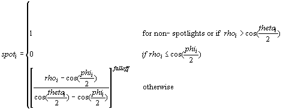
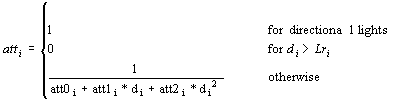
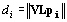

The following explains the formula for specular lighting.
hi are halfway vectors between the normal and the direction to light.
hi = norm(norm(Vpe) + Ldi)), if D3DRENDERSTATE_LOCALVIEWER = TRUE
hi = norm((0,0,-1) + Ldi)), if D3DRENDERSTATE_LOCALVIEWER = FALSE

rhoi = norm(Ldi) • norm(VLpi)

di is a distance from a vertex to the light i and is computed as follows:

Diffuse and specular components are clamped to be from 0 to 255, after all lights are processed and interpolated separately.